Complete Game Catalog¶
A visual catalog of every known Satellaview broadcast game, with screenshots where available.
The Legend of Zelda Series¶
BS Zelda no Densetsu (Map 1 & 2)¶
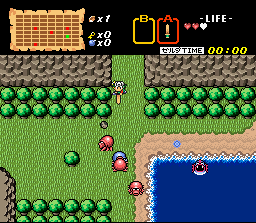
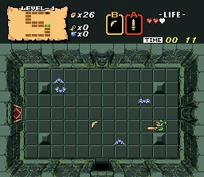
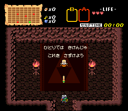
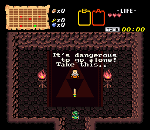
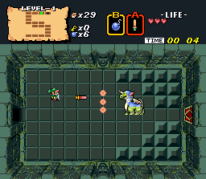
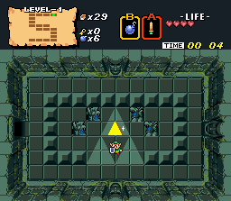
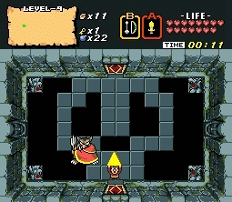
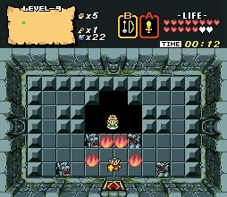
- Type: Downloadable (SoundLink for Map 2)
- Broadcast: 1996 (weeks 1-4 each)
- Status: Fully restored — playable in emulation
- Note: Dungeon names spell "St.GIGA" (Map 1) and "NiNtENDO" (Map 2)
BS Zelda: Inishie no Sekiban (Ancient Stone Tablets)¶
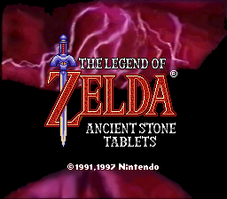
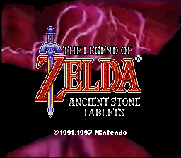
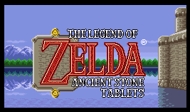

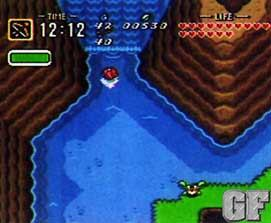
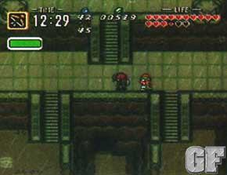
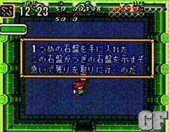
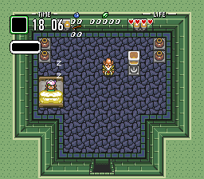
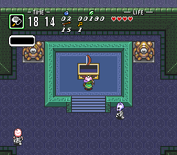
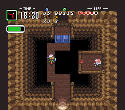
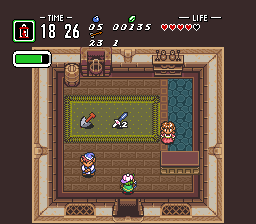
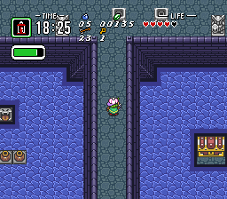
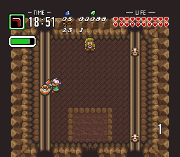
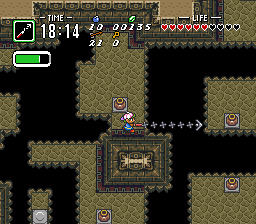
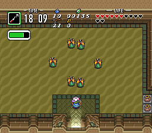
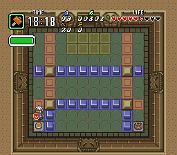
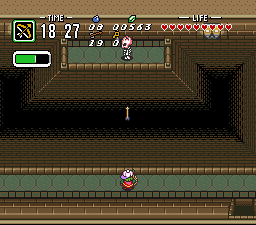
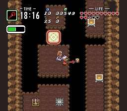
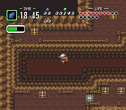
- Type: SoundLink (with voice acting)
- Broadcast: 1997-1998 (4 weeks)
- Status: Partially restored — first Zelda with voice acting
- Broadcast screenshot:
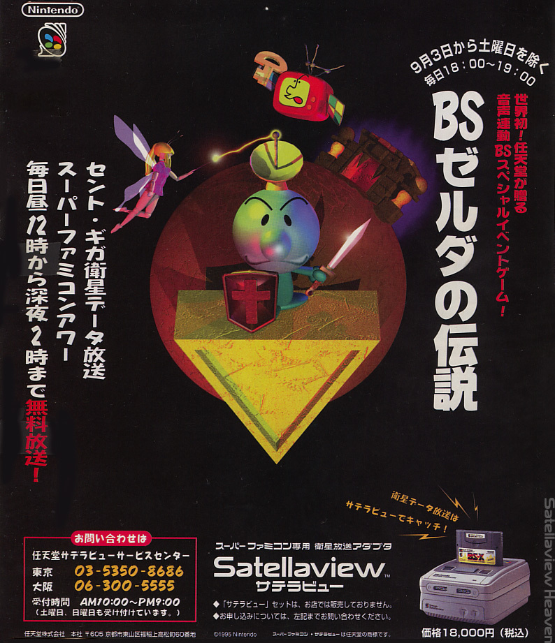
BS Fire Emblem: Akaneia Senki¶
- Type: SoundLink (radio drama + tactical RPG)
- Broadcast: Sep 28 – Oct 19, 1997 (4 episodes)
- Status: Restored (DS re-release)
- Screenshots: None available in archive
BS Tantei Club: Yuki ni Kieru Kako¶
- Type: SoundLink (mystery adventure)
- Broadcast: 1997 (3+ weeks)
- Status: Project Gam restoration
- Screenshots: None available in archive
BS Dragon Quest¶
- Type: Downloadable
- Broadcast: 1996 (4 weeks, Feb-Mar)
- Status: Debug ROM leaked — unique combined-week build
- Screenshots: None available in archive
BS SimCity: Machi Tsukuri Taikai¶
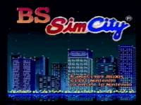
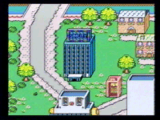
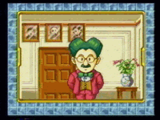
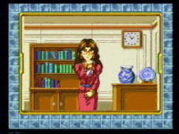
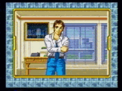
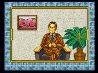
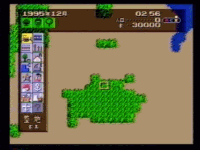
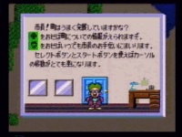
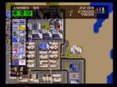
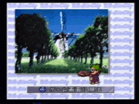
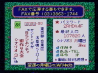
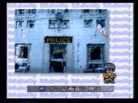
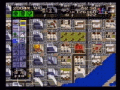
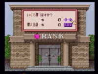
- Type: Downloadable (city-building competition)
- Broadcast: 1995
- Status: Documented by Satellaview Heaven
BS Super Mario Collection (BS Mario: Around the World)¶
- Type: Downloadable (Time Attack)
- Broadcast: 1995 (4 weeks), rebroadcast 1997-1998
- Status: Restored
Broadcast screenshot:
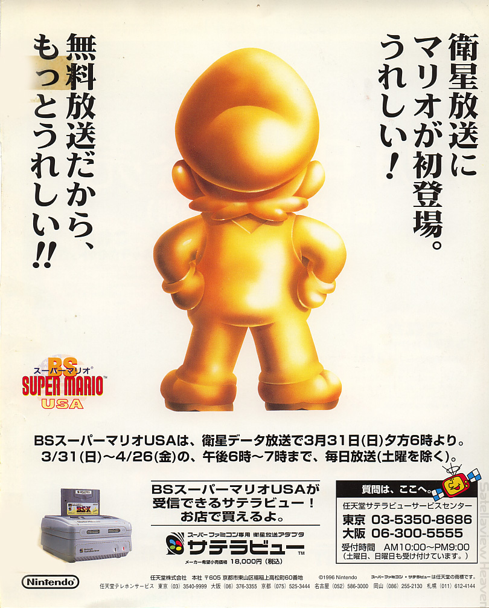
BS F-Zero Grand Prix / BS F-Zero 2¶
- Type: SoundLink
- Broadcast: 1997
- Status: Partially restored; BS F-Zero 2 playable at SatellaOFF
- Screenshots: None available in archive
Excitebike: BunBun Mario Battle Stadium¶
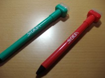
- Type: SoundLink (multiplayer racing)
- Broadcast: May-Nov 1997 (4+ weeks)
- Status: Patched by d4s — playable without satellite input
BS Super Mario USA Power Challenge¶
- Type: SoundLink
- Broadcast: Mar-May 1996 (4 weeks)
- Status: Partially restored
- Screenshots: None available in archive
Tamori no Picross¶
- Type: Downloadable (puzzle)
- Broadcast: Apr-Sep 1995 (4+ title screens identified)
- Status: Preserved — Jupiter Corp dates contradicted by VHS evidence
Kirby no Omocha Hako (Kirby's Toy Box)¶
- Type: Downloadable (minigame collection)
- Broadcast: 1996
- Status: Preserved by Elude Visibility
- Screenshots: None available in archive
Satella-Q / SatellaQuiz¶

- Type: Quiz (live broadcast)
- Broadcast: 1995-1999 (many editions)
- Status: Documented — scores recorded at SatellaOFF
BS Shin Onigashima¶
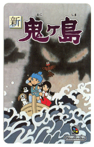
- Type: SoundLink
- Broadcast: Unknown
- Status: Music restoration attempted from VHS recordings
Additional SoundLink & Downloadable Games¶
These games are documented in broadcast schedules but few details survive:
BS Shiren the Wanderer: Save Surara¶
- Type: SoundLink
- Broadcast: May-Jun 1996 (4 weeks)
- Status: Documented at Satellaview History Museum
Bass Tsuri No.1¶
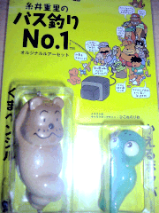
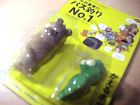
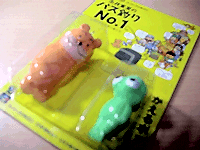
- Type: SoundLink (fishing tournament)
- Broadcast: Apr-Aug 1997 (multiple tournaments)
- Status: VTR-confirmed by Satellaview History Museum
Mightypockets (Mighty P)¶
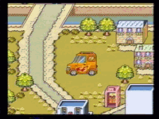
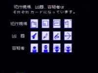
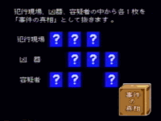
- Type: Downloadable (?)
- Broadcast: Unknown
- Status: Screenshots preserved from Satellaview Heaven
Piko Piko Pirates¶
- Type: Downloadable (?)
- Broadcast: Unknown
- Status: Screenshots preserved from Satellaview Heaven
BS Mario: Board Walk to the Palace¶
- Type: SoundLink
- Broadcast: Dec 1995 (4 weeks)
- Status: Documented at Satellaview History Museum
BS Spriggan Powered¶
- Type: SoundLink
- Broadcast: May-Jul 1996
- Status: Documented
BS Treasure Hunter¶
- Type: SoundLink
- Broadcast: Sep 1996 (4 weeks)
- Status: Documented
BS Shioh-Gi¶
- Type: SoundLink
- Broadcast: Sep-Oct 1996 (4 weeks)
- Status: Documented
Sound Journal: Pop & Graphic Since 1980¶
- Type: SoundLink (music/magazine)
- Broadcast: Oct-Nov 1996 (6 episodes)
- Status: Documented
BS Teteru Moon: Grand Prix¶
- Type: SoundLink
- Broadcast: Dec 1996 – Jan 1997 (4 weeks)
- Status: Documented, rebroadcast Aug 1997
BS Nitchie Tsuu March¶
- Type: SoundLink
- Broadcast: Jan-Feb 1997 (2 weeks)
- Status: Documented
BS Sampei: Fun Fishing Memory¶
- Type: SoundLink
- Broadcast: Feb 1997 (3 weeks)
- Status: Documented
BS Ihatou Story¶
- Type: SoundLink
- Broadcast: Mar 1997 (4 weeks)
- Status: Documented
San Goku Shi no Bouei: Star Pirates¶
- Type: SoundLink
- Broadcast: Jun-Sep 1997 (4+ weeks)
- Status: Documented
SatellaWalker¶
- Type: SoundLink (Satebô adventure)
- Broadcast: Jul 1997
- Status: Interactive mascot adventure game
Dramatic Sound Witch (Blue & Power)¶
- Type: SoundLink
- Broadcast: Sep 1997
- Status: Documented
BS Bokujou Monogatari (Perfect?!)¶
- Type: SoundLink
- Broadcast: Mar 1998 (2 weeks)
- Status: Documented
BS Mario Collection 2 (4 weeks)¶
- Type: Downloadable
- Broadcast: Dec 1997 – Jan 1998 (4 weeks)
- Status: Documented
All Japan Super Bombliss Cup '95 + Wai Wai de Pon¶
- Type: SoundLink (puzzle competition)
- Broadcast: Oct-Nov 1995
- Status: Documented at Satellaview History Museum
Wai Wai de Pon (Spring Special + Specials)¶
- Type: SoundLink (panel puzzle)
- Broadcast: Nov-Dec 1995, Mar 1996
- Status: Nintendo character panel-matching game; documented at Satellaview History Museum
BS Kirby Ball¶
- Type: SoundLink (breakout/Arkanoid)
- Broadcast: Aug 1996
- Status: Kirby-themed breakout game; distinct from Kirby no Omocha Hako
Takaru Fantasy¶
- Type: SoundLink
- Broadcast: May-Jul 1996 (paired with BS Spriggan Powered)
- Status: Documented at Satellaview History Museum
Satellaview Grand Prix '96 (Ishin Brothers Cup)¶
- Type: Event (live competition)
- Broadcast: Sep 1, 1996
- Status: Documented at Satellaview History Museum
BS Quiz: Waku Waku San¶
- Type: Quiz (SoundLink)
- Broadcast: Jun 1997, Nov-Dec 1997 (2-week runs)
- Status: Quiz game documented at Satellaview History Museum
Mamono to Issho¶
- Type: SoundLink (Pikmin-like?)
- Broadcast: Jul 1997, Dec 1997
- Status: Likely lost; described as "Pikmin-like" by Kameb; documented at Satellaview History Museum
Satellaview Grand Prix 2: Mine + Live¶
- Type: Event (live competition)
- Broadcast: Jan 25-31, 1998
- Status: Documented at Satellaview History Museum
SatellaWalker 2¶
- Type: SoundLink (Satebô adventure)
- Broadcast: Feb 15-28, 1998
- Status: Sequel to SatellaWalker; documented at Satellaview History Museum
Sound Journal For Lovers¶
- Type: SoundLink (music/magazine)
- Broadcast: Feb 8-14, 1998 (2 weeks)
- Status: Valentine's special; documented at Satellaview History Museum
Disc-Based Media (Satellaview-Tsushin Magazine)¶
Published by St.GIGA, these disc-based magazines contained game data, music, and articles:
Complete Broadcast Timeline¶
For every known broadcast with exact dates, see the SoundLink Broadcast List compiled from the Satellaview History Museum.
Games without available screenshots are noted. If you have screenshots or recordings of any missing games, please contribute!